第17章 事务
从数据库用户的角度看，对数据库执行的一组操作往往构成一个整体。例如，把钱从支票账户转入储蓄账户，对客户而言是一次操作，数据库系统内部却需要执行多个步骤。这些步骤必须全部完成；一旦失败，就必须全部不发生。支票账户已经扣款、储蓄账户却没有入账，是不可接受的。
构成单个逻辑工作单元的一组操作，称为事务。即使发生故障，数据库系统也必须保证事务正确执行：要么整个事务都执行，要么完全不执行。系统还必须管理多个事务的并发执行，避免产生不一致。以转账为例，另一个计算客户总余额的事务，可能读到扣款前的支票账户余额，却读到入账后的储蓄账户余额，结果就会算错。
本章介绍事务处理的基本概念。并发事务处理和故障恢复的细节，分别见第 18 章与第 19 章。
17.1 事务的概念
事务是访问、也可能更新多个数据项的一个程序执行单元。事务通常由用户程序发起：程序可以使用高级数据操纵语言（通常为 SQL），也可以使用 C++、Java 等编程语言，通过 JDBC 或 ODBC 嵌入数据库访问。事务以 begin transaction 和 end transaction 形式的语句或函数调用划定边界，两者之间执行的全部操作都属于该事务。
这组步骤在用户看来必须是一个不可分割的整体，全部执行或完全不执行。事务开始后无论因何失败，都必须撤销它对数据库已经造成的改变。无论是事务自身出错（例如除以零）、操作系统崩溃，还是计算机停止运行，都必须满足这一要求。实现起来并不容易：有些修改可能还只保存在事务的主存变量中，另一些已经写入数据库并存到磁盘。这种“全有或全无”的性质称为原子性。
事务既然是一个整体，在外部看来，它的各个操作之间就不能插入不属于该事务的其他数据库操作。实现中却有许多独立步骤：即使一条 SQL 语句也可能多次访问数据库，一个事务还可能包含多条 SQL。数据库系统必须采取专门措施，使事务能正确运行，免受并发执行的其他数据库语句干扰。这种性质称为隔离性。
如果系统虽然保证了事务正确执行，却在随后崩溃时“忘掉”这个事务，那么正确执行的意义就很有限。事务产生的效果必须在崩溃后仍然保留，这称为持久性。
有了以上三种性质，事务就成为组织数据库交互的理想方式。事务自身还必须满足一项要求：保持数据库的一致性。如果数据库原先处于一致状态，事务以原子方式、隔离地执行，结束时数据库也必须处于一致状态。这一要求超出了前面讨论的主键、参照完整性、check 等数据完整性约束，还包括那些过于复杂、无法用 SQL 完整性结构表达的应用约束。如何维护这些约束，由编写事务的程序员负责。这种性质称为一致性。
概括这些要求，数据库系统需要维护事务的以下性质：
- 原子性（Atomicity）：事务中的全部操作都正确反映到数据库中，或者全部不反映。
- 一致性（Consistency）：事务单独执行、没有其他事务并发运行时，保持数据库的一致性。
- 隔离性（Isolation）：多个事务可以并发执行，但对于任意两个事务 Tᵢ、Tⱼ，在 Tᵢ 看来，Tⱼ 仿佛在 Tᵢ 开始前就已完成，或者在 Tᵢ 完成后才开始。每个事务都察觉不到系统中其他并发事务的存在。
- 持久性（Durability）：事务成功完成后，即使系统发生故障，它对数据库造成的改变也会保留。
这些性质通常称为 ACID 性质，名称来自四个英文词的首字母。
后面将看到，保证隔离性可能明显影响系统性能。为此，一些应用会放宽隔离要求。我们先讨论严格保证 ACID 的情况，再研究这些折中做法。
17.2 一个简单的事务模型
SQL 功能强大且复杂，因此先用一种简单的数据库语言研究事务，着眼于数据何时从磁盘进入主存、又何时从主存写回磁盘。暂时忽略 SQL 的 insert 和 delete，到 18.4 节再讨论；在这个简单语言里，实际的数据运算仅限算术运算。随后再回到操作更丰富的真实 SQL 环境。简化模型中的每个数据项只包含一个数据值，示例中为数值；每项都有名称，示例通常用 A、B、C 等单个字母。
我们用一个简单的银行应用说明事务概念。它包含若干账户，以及访问、更新这些账户的一组事务。事务通过两种操作访问数据：
read(X)：把数据库中的数据项 X 传到执行此操作的事务所拥有的主存缓冲区中，放入同样名为 X 的变量。write(X)：把执行此操作的事务主存缓冲区中变量 X 的值，传回数据库的数据项 X。
必须分清，数据项的修改是只存在于主存，还是已经写到磁盘数据库。真实数据库中的 write 不一定立即修改磁盘；写入可能暂存于其他位置，稍后再落盘。不过目前先假定 write 会立即更新数据库。17.3 节进一步讨论存储，第 19 章讨论主存中的数据库数据何时写回磁盘。
设事务 Tᵢ 将 50 美元从账户 A 转到账户 B，可以写成：
Ti: read(A);
A := A − 50;
write(A);
read(B);
B := B + 50;
write(B).
下面逐一考察 ACID 性质；为便于说明，顺序与缩写中的 A-C-I-D 略有不同。
一致性。 本例要求事务执行前后 A 与 B 的总和不变。否则，事务就可能凭空创造或消灭货币。很容易验证，只要执行前数据库是一致的，执行后仍然一致。
确保单个事务的一致性，由编写它的应用程序员负责。4.4 节讨论的自动完整性约束检查，可以帮助完成这项工作。
原子性。 假设 Tᵢ 执行前，A 和 B 分别为 1000 美元和 2000 美元。若 Tᵢ 在执行 write(A) 之后、执行 write(B) 之前发生故障，无法正常完成，数据库中的余额就会变为 950 美元和 2000 美元。这次故障使 50 美元消失了，A + B 不再保持不变。
故障使系统状态无法再反映数据库应当记录的现实状态，这称为不一致状态。数据库系统必须保证这种不一致对外不可见。不过，执行过程中确实必须经过某个不一致状态。即使 Tᵢ 最终正常完成，中途仍有 A 为 950 美元、B 为 2000 美元的时刻；随后它才变成 A 为 950 美元、B 为 2050 美元的一致状态。只要事务从未开始，或者保证能够完成，这个中间的不一致就不会在事务执行之外被看到。这正是原子性要求的原因：事务的全部操作都反映到数据库中，或者全部不反映。
保证原子性的基本办法是：数据库在磁盘上记录事务将要写入的数据原值，保存到称为日志的文件。事务若未执行完，数据库就根据日志恢复旧值，使外界看来事务从未执行过。17.4 节继续讨论这一思路。保证原子性是数据库系统的职责，具体由恢复系统承担，第 19 章会详细介绍。
持久性。 一旦事务成功完成，并通知发起者转账已经完成，此后任何系统故障都不能导致这次转账的数据丢失。持久性保证成功事务对数据库的全部更新在后续故障中仍然保留。
目前先假定计算机故障可能丢失主存数据，但写到磁盘的数据不会丢失。磁盘数据丢失的防护见第 19 章。满足以下任一条件，就可以保证持久性：
- 在事务完成之前，将事务的更新写入磁盘。
- 将更新信息写入磁盘，且这些信息足以让数据库在故障重启后重建相应更新。
第 19 章介绍的恢复系统同时负责保证原子性和持久性。
隔离性。 即使每个事务都满足一致性、原子性，多个事务并发执行时，操作仍可能以不恰当的方式交错，导致不一致。
例如，从 A 向 B 转账时，数据库曾短暂处于 A 已扣款、B 尚未入账的状态。另一个并发事务若在此时读取 A、B 并计算 A + B，就会得到不一致的结果。若它继续依据这些错误值更新 A、B，即使两个事务都执行完，数据库仍可能处于不一致状态。
解决并发问题的一种办法，是让事务串行执行，即一个接一个运行。但 17.5 节将说明，并发执行能带来明显的性能收益。因此，人们设计了其他方案，允许多个事务并发运行。
17.5 节讨论并发事务引发的问题。隔离性要求并发执行所得到的系统状态，等价于这些事务按某个顺序逐一执行所得到的状态。17.6 节进一步讨论隔离原理。数据库中的并发控制系统负责保证隔离性，第 18 章将介绍它。
17.3 存储结构
要理解如何保证事务的原子性和持久性，必须先了解数据库中的数据项如何存储和访问。
第 12 章按速度、容量和抵抗故障的能力区分存储介质，并分为易失性存储与非易失性存储。下面重温这两个概念，再引入稳定存储。
- 易失性存储。 其中的信息通常无法在系统崩溃后保留，例如主存和高速缓存。访问速度很快，既因为存储器本身速度快，也因为可以直接访问其中任意数据项。
- 非易失性存储。 其中的信息能在系统崩溃后保留。例子包括用于在线存储的磁盘、闪存等二级存储，以及用于归档的光学介质、磁带等三级存储。按现有技术，非易失性存储通常比易失性存储慢，随机访问时差距尤其明显。不过，二级和三级存储设备本身也可能故障，造成信息丢失。
- 稳定存储。 其中的信息永不丢失。这里的“永不”要有所保留，因为理论上无法保证绝对不丢失：虽然概率极低，黑洞仍可能吞没地球，永久毁掉全部数据！稳定存储在理论上无法实现，但可以用技术手段让丢失概率极低，从而逼近它。实现方法是在多个故障模式相互独立的非易失性介质上保存副本，通常使用磁盘。更新必须谨慎进行，防止更新期间的故障导致信息丢失。19.2.1 节讨论具体实现。
实际系统中，这几类存储的界限可能没有上述分类那么清楚。例如，某些 RAID 控制器配有备用电池，使部分主存数据能在系统崩溃、断电后继续保留。
要保证事务持久，修改必须写入稳定存储。同样，要保证原子性，必须先把日志记录写入稳定存储，再修改磁盘上的数据库。系统能在多大程度上保证这两种性质，取决于其稳定存储实现究竟有多可靠。有些场景认为磁盘上留一份副本即可；数据价值高、事务重要的应用则需要多份副本，更接近理想的稳定存储。
17.4 事务的原子性与持久性
事务有时无法成功执行完毕，这样的事务称为已中止事务。为了保证原子性，中止事务不能对数据库状态留下任何影响，必须撤销它已经造成的修改。修改全部撤销后，就称事务已经回滚。恢复机制负责处理中止，通常借助日志：事务每次修改数据库之前，先在日志中记录事务标识、数据项标识、修改前的旧值和修改后的新值，然后才修改数据库。日志既可用于重做修改，保证原子性和持久性，也可在事务执行期间发生故障时用于撤销修改，保证原子性。基于日志的恢复细节见第 19 章。
成功完成执行的事务称为已提交事务。执行过更新的事务提交后，数据库进入一个新的一致状态，即使发生系统故障，该状态也必须保留。
事务提交后，无法再通过中止来撤销其效果。要抵消已提交事务的影响，必须另行执行补偿事务。例如，原事务给账户增加了 20 美元，补偿事务就减去 20 美元。不过，并非总能构造出这样的补偿事务。因此，编写和执行补偿事务由用户负责，数据库系统不会代为处理。
“成功完成”还需要更精确的定义。为此，建立一个简单的抽象事务模型，规定事务必须处于以下状态之一：
- 活动（active）：初始状态，事务执行期间一直处于此状态。
- 部分提交（partially committed）：最后一条语句已经执行。
- 失败（failed）：发现正常执行无法继续。
- 已中止（aborted）：事务已经回滚，数据库已恢复到事务开始前的状态。
- 已提交（committed）：事务成功完成。
图17.1 给出对应的状态图。事务进入已提交状态，才算提交；进入已中止状态，才算中止。提交或中止后，事务便称为已终止。
事务从活动状态开始，执行完最后一条语句后，进入部分提交状态。此时虽然程序已经执行完，事务仍可能中止，因为实际输出可能只暂存在主存中，硬件故障仍会阻止它成功完成。
随后，数据库系统向磁盘写入足够的信息，使故障后重启时能够重建事务所做的更新。最后一份必要信息写完，事务才进入已提交状态。
如前所述，目前仍假定故障不会丢失磁盘数据。第 19 章介绍磁盘数据丢失的处理技术。
系统一旦确认事务无法继续正常执行，例如出现硬件故障或逻辑错误，事务就进入失败状态。它必须回滚，然后进入已中止状态。此时系统有两个选择：
- 重新启动事务。 仅适用于中止原因是硬件或软件错误，且错误并非来自事务内部逻辑的情况。重新启动的事务视为一个新事务。
- 终结事务。 通常因为存在只能通过重写应用才能纠正的内部逻辑错误，或者输入错误，或者数据库中找不到所需数据。
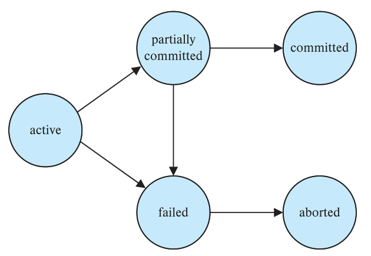
图17.1 事务状态图。active、partially committed、committed、failed、aborted 分别为活动、部分提交、已提交、失败、已中止。
处理可被外界观察到的写入时，必须谨慎，例如向用户屏幕输出，或发送电子邮件。一旦写出，外界可能已经看到，就无法擦除。多数系统只允许事务进入已提交状态后再进行这些写入。一种实现方式是，先把相关值暂存到数据库中的特殊关系里，提交后再真正向外写出。若系统在提交之后、完成外部写入之前故障，重启后就利用非易失性存储中的数据继续执行外部写入。
有些外部写入更难处理。例如，ATM 准备吐出现金，系统恰在现金实际吐出前故障，且假定吐钞本身是原子的。重启后再吐钞毫无意义，因为用户可能已经离开。这时需要在重启后执行补偿事务，例如把金额存回用户账户。
再如用户通过网页预订。预订事务刚提交，数据库或应用服务器就可能崩溃，也可能是用户网络连接刚好断开。这两种情况下，事务虽然提交，外部输出却没有发生。应用必须允许用户再次连接时，查明此前的事务究竟是否成功。
某些应用希望事务仍处于活动状态时就向用户显示数据，特别是持续数分钟或数小时的长事务。不过，这种可观察输出需要以放宽事务原子性为代价。
17.5 事务隔离
事务处理系统通常允许多个事务并发运行。前面已经看到，并发更新会给数据一致性带来许多问题。要在并发下保证一致性，需要额外工作；要求事务串行执行、等前一个完成再开始下一个，会容易得多。但允许并发有两个充分理由：
- 提高吞吐量和资源利用率。 一个事务包含许多步骤，有些进行 I/O，有些使用 CPU。CPU 与磁盘可以并行工作，因此可以让一个事务在某块磁盘上读写，另一个在 CPU 上执行，第三个在另一块磁盘上读写。这样能提高系统吞吐量，即单位时间内执行的事务数，也能提高处理器和磁盘的利用率，减少空闲、未做有用工作的时间。
- 缩短等待时间。 系统中可能同时存在长事务和短事务。若串行执行，短事务也得等前面的长事务完成，产生难以预测的延迟。如果它们访问数据库的不同部分，允许并发、共享 CPU 时间与磁盘访问会更好。并发能减少这种不可预测的延迟，也能降低平均响应时间，即事务从提交给系统到完成所需的平均时间。
注17.1 并发的发展趋势
计算领域的若干发展趋势，让系统能够提供越来越多的并发。数据库系统利用这些能力提高整体性能时，并发运行的事务数也必然增加。
早期计算机只有一个处理器，没有真正的并发；操作系统在多个任务或进程之间分配处理器，形成表面上的并发。现代计算机通常包含多个处理器，每个处理器称为一个核；一块处理器芯片可以包含多个核，多块芯片又可连接成一个共享主存的系统。并行数据库还可能包含多个这样的系统。第 20 章介绍并行数据库架构。
多处理器、多核提供的并行能力有两类用途：一是并行执行一条长查询的不同部分，加快查询；二是同时执行大量查询，通常是较短的查询，例如支持大量并发用户。第 21～23 章介绍构建并行数据库的算法。
数据库采用并发执行的动机，与操作系统采用多道程序设计的动机基本相同。
多个事务并发运行时，即使各个事务单独执行都正确，也可能违反隔离性，破坏数据库一致性。本节引入调度概念，用来识别哪些执行方式能够保证隔离性，进而保证一致性。
数据库必须控制并发事务之间的相互影响，防止它们破坏一致性。这些机制统称为并发控制方案，第 18 章将详细讨论。现在先研究什么样的并发执行是正确的。
仍考虑 17.1 节的简化银行系统，其中有多个账户，以及访问、更新账户的一组事务。设 T₁、T₂ 都将资金从一个账户转到另一个账户。T₁ 从 A 向 B 转 50 美元：
T1: read(A);
A := A − 50;
write(A);
read(B);
B := B + 50;
write(B).
T₂ 把 A 余额的 10% 转到 B：
T2: read(A);
temp := A * 0.1;
A := A − temp;
write(A);
read(B);
B := B + temp;
write(B).
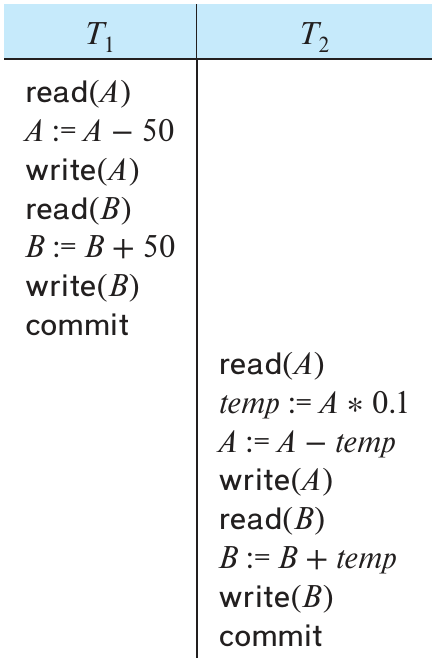
图17.2 调度 1：先 T₁、后 T₂ 的串行调度。 时间从上向下推进，分列表示不同事务；read 为读取，write 为写入，commit 为提交，abort 为中止。
假设 A、B 现有余额分别为 1000 美元、2000 美元，两个事务按 T₁、T₂ 的顺序逐一执行，过程如图17.2。图中时间从上向下推进，左列为 T₁ 的指令，右列为 T₂ 的指令。执行后，A、B 分别为 855 美元、2145 美元，A + B 的总额保持不变。
若改为先 T₂、后 T₁，执行过程如图17.3。总额同样保持不变，最终 A 为 850 美元，B 为 2150 美元。
这些执行序列称为调度，表示系统执行指令的时间顺序。一组事务的调度必须包含这些事务的全部指令，并保持每个事务内部的指令顺序。例如，在 T₁ 的任何有效调度中，write(A) 都必须位于 read(B) 之前。调度中还列出 commit，表示事务进入已提交状态。以下把先 T₁ 后 T₂ 的序列称为调度 1，把先 T₂ 后 T₁ 的序列称为调度 2。
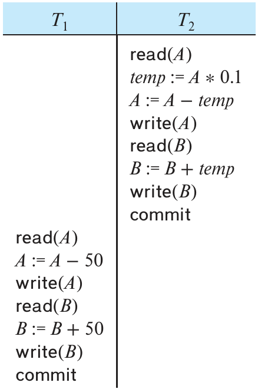
图17.3 调度 2：先 T₂、后 T₁ 的串行调度。 时间从上向下推进，分列表示不同事务；read 为读取，write 为写入，commit 为提交，abort 为中止。
这些调度都是串行调度：同一个事务的所有指令连续出现。根据组合数学中的一个常见公式，n 个事务共有 n 的阶乘，即 n! 种不同的有效串行调度。
数据库并发执行多个事务时，调度就无须保持串行。两个事务并发时，操作系统可以先让一个事务运行一会儿，再进行上下文切换，让另一个运行一会儿，之后再切回来。多个事务共享 CPU 时间。
两个事务的指令可以交错，因而产生多种执行序列。一般无法准确预知 CPU 切换到其他事务之前，当前事务会执行多少条指令。1
回到刚才的例子，并发执行可能产生图17.4 的调度。执行后得到的状态，与先 T₁ 后 T₂ 串行执行相同，A + B 的总额保持不变。
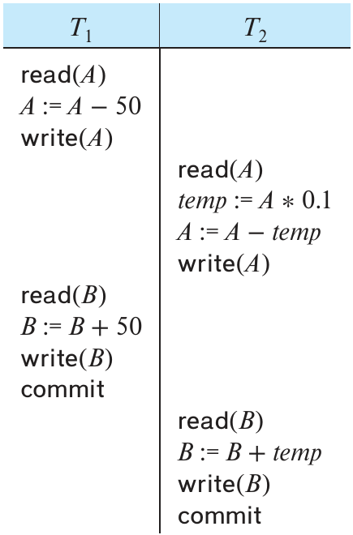
图17.4 调度 3：与调度 1 等价的并发调度。 时间从上向下推进，分列表示不同事务；read 为读取，write 为写入，commit 为提交，abort 为中止。
并非所有并发执行都会产生正确状态。图17.5 就是反例：执行后 A、B 分别为 950 美元、2100 美元，凭空多出了 50 美元。最终状态不一致，两个事务执行前后的 A + B 不相等。
若完全由操作系统控制并发，许多调度都有可能出现，包括上面这种会导致数据库不一致的调度。数据库必须保证实际执行的任何调度都使数据库保持一致，这项工作由并发控制组件承担。
要保证并发执行的一致性，可以要求实际调度的效果与某个完全没有并发的执行顺序相同，即在某种意义上等价于串行调度。这样的调度称为可串行化调度。
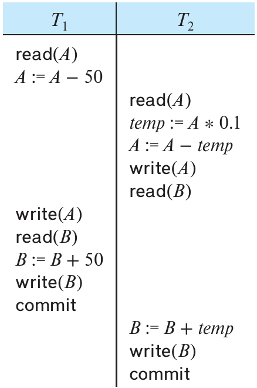
图17.5 调度 4：会导致不一致状态的并发调度。 时间从上向下推进，分列表示不同事务；read 为读取，write 为写入，commit 为提交，abort 为中止。
17.6 可串行化性
讨论并发控制组件如何保证可串行化之前，先研究怎样判断一个调度是否可串行化。串行调度当然可串行化；多个事务的步骤交错后，判断就更困难。事务是程序，准确分析它做了哪些操作、不同事务的操作如何相互影响并不容易。因此，暂时只考虑 read 和 write 两种操作。对于数据项 Q，假定事务在 read(Q) 与 write(Q) 之间，可以对本地缓冲区中的 Q 副本执行任意运算。从调度角度看，模型中只有读写指令具有意义。提交操作虽然也有关，但留到 17.7 节再考虑。所以调度可以只显示读写指令，例如图17.6 中简化后的调度 3。
本节讨论不同形式的调度等价性，重点是冲突可串行化性。
考虑调度 S 中相邻的两条指令 I、J，分别属于事务 Tᵢ、Tⱼ，且 i ≠ j。若二者访问不同数据项，可以交换顺序，不影响调度中任何指令的结果；若访问同一数据项 Q，先后顺序就可能影响结果。只考虑读写时，共有四种情况：
- I =
read(Q)，J =read(Q)。顺序无关紧要，Tᵢ、Tⱼ 读到的 Q 都相同。
- I =
read(Q)，J =write(Q)。I 先执行时，Tᵢ 读不到 Tⱼ 在 J 中写入的值；J 先执行时，Tᵢ 会读到那个值。因此顺序会影响结果。
- I =
write(Q)，J =read(Q)。与上一种情况类似，顺序会影响结果。
- I =
write(Q)，J =write(Q)。两条都是写指令，顺序不会影响 Tᵢ、Tⱼ 自身，但会影响 S 中下一条read(Q)取得的值，因为数据库只保留后一次写入的结果。若 S 中此后没有其他write(Q)，二者的顺序就直接决定最终数据库中 Q 的值。
可见，只有 I、J 都是读指令时，相对执行顺序才不影响结果。
如果 I、J 来自不同事务，访问同一数据项，且至少一条是写指令，就称它们冲突。
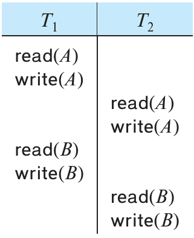
图17.6 调度 3：只显示读写指令。 时间从上向下推进，分列表示不同事务；read 为读取，write 为写入，commit 为提交，abort 为中止。
以图17.6 的调度 3 为例，T₁ 的 write(A) 与 T₂ 的 read(A) 冲突；T₂ 的 write(A) 与 T₁ 的 read(B) 则不冲突，因为访问的是不同数据项。
设 I、J 是调度 S 中相邻的两条指令。若来自不同事务且不冲突，交换二者就得到新调度 S′。S 与 S′ 等价，因为除 I、J 外，其余指令顺序完全相同，而 I、J 的顺序又不影响结果。
调度 3 中 T₂ 的 write(A) 与 T₁ 的 read(B) 不冲突，可以交换，得到图17.7 的调度 5。无论系统初始状态怎样，调度 3 和调度 5 都产生相同的最终状态。
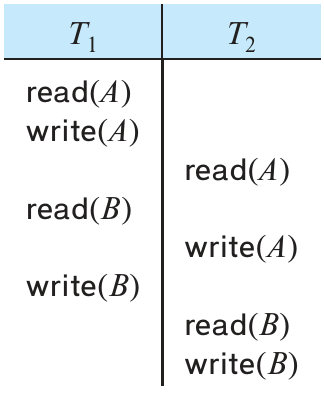
图17.7 调度 5：交换调度 3 中一对指令后的结果。 时间从上向下推进，分列表示不同事务；read 为读取，write 为写入，commit 为提交，abort 为中止。
继续交换不冲突的指令：
- 交换 T₁ 的
read(B)与 T₂ 的read(A)。 - 交换 T₁ 的
write(B)与 T₂ 的write(A)。 - 交换 T₁ 的
write(B)与 T₂ 的read(A)。
最终得到图17.8 的调度 6，它是串行调度，与调度 1 完全相同，只省略了读写之外的指令。这样就证明调度 3 等价于一个串行调度：无论初始状态是什么，调度 3 都与某个串行调度产生同样的最终状态。
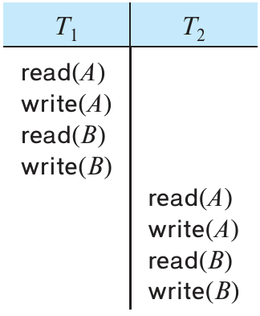
图17.8 调度 6：与调度 3 等价的串行调度。 时间从上向下推进，分列表示不同事务；read 为读取，write 为写入，commit 为提交，abort 为中止。
如果调度 S 能通过一系列不冲突指令的交换变为 S′，就称 S 与 S′ 冲突等价。2
串行调度之间也未必冲突等价。例如，调度 1 与调度 2 就不冲突等价。
由冲突等价可以定义冲突可串行化性：若调度 S 与某个串行调度冲突等价，就称 S 冲突可串行化。调度 3 与串行调度 1 冲突等价，所以它冲突可串行化。
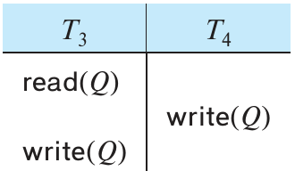
图17.9 调度 7。 时间从上向下推进，分列表示不同事务；read 为读取，write 为写入，commit 为提交，abort 为中止。
再看图17.9 的调度 7，其中只列出 T₃、T₄ 的重要操作，即读写。它既不与串行调度 ⟨T₃, T₄⟩ 冲突等价，也不与 ⟨T₄, T₃⟩ 冲突等价，因此不具有冲突可串行化性。
下面介绍一种简单高效的判定方法。从调度 S 构造一个称为优先图的有向图 G = (V, E)，其中 V 是顶点集合，E 是边集合。每个参与调度的事务对应一个顶点。对于不同事务 Tᵢ、Tⱼ，只要满足以下任一条件，就加入边 Tᵢ → Tⱼ：
- Tᵢ 的
write(Q)先于 Tⱼ 的read(Q)。
- Tᵢ 的
read(Q)先于 Tⱼ 的write(Q)。
- Tᵢ 的
write(Q)先于 Tⱼ 的write(Q)。
优先图中若存在边 Tᵢ → Tⱼ，那么与 S 等价的任何串行调度 S′ 都必须把 Tᵢ 放在 Tⱼ 之前。
例如，图17.10(a) 是调度 1 的优先图，只有一条 T₁ → T₂ 的边，因为 T₁ 的全部指令都在 T₂ 第一条指令之前执行。同理，图17.10(b) 是调度 2 的优先图，只有 T₂ → T₁，因为 T₂ 的全部指令先于 T₁。
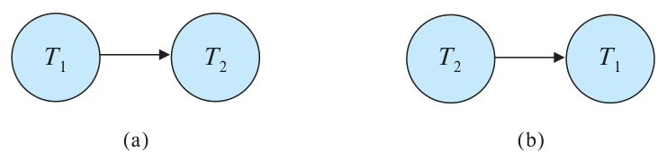
图17.10 优先图：(a) 调度 1；(b) 调度 2。
调度 4 的优先图见图17.11。T₁ 的 read(A) 先于 T₂ 的 write(A)，所以有边 T₁ → T₂；T₂ 的 read(B) 先于 T₁ 的 write(B)，所以也有边 T₂ → T₁。
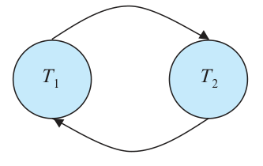
图17.11 调度 4 的优先图，两条方向相反的边构成环。
若优先图有环，调度 S 就不具有冲突可串行化性；若无环，S 就具有冲突可串行化性。
寻找一个与优先图偏序一致的线性顺序，即可得到等价串行调度中的事务顺序，这一过程称为拓扑排序。拓扑排序通常可能产生多个线性顺序。例如，图17.12(a) 的图有两种可接受的线性顺序，分别见图17.12(b)、(c)。
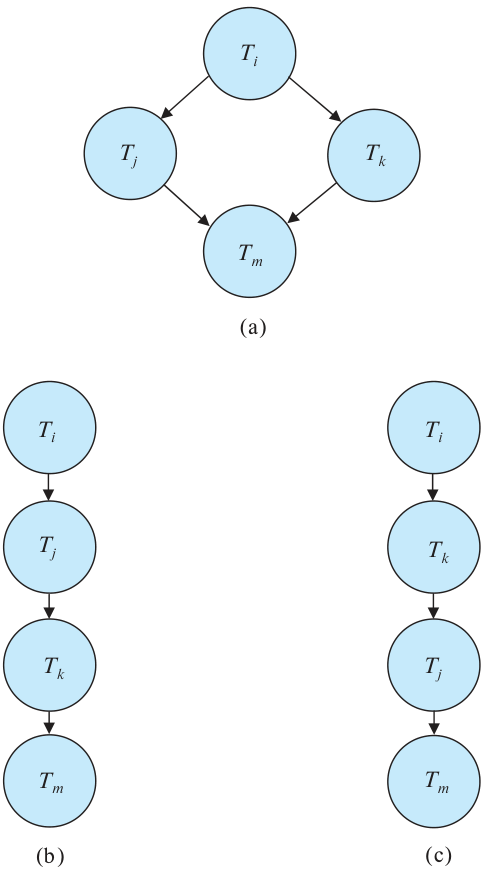
图17.12 拓扑排序示例。(a) 是原优先图；(b) 为 Tᵢ、Tⱼ、Tₖ、Tₘ；(c) 为 Tᵢ、Tₖ、Tⱼ、Tₘ。
要测试冲突可串行化性，只需构造优先图，再调用环检测算法。标准算法教材中介绍了这类算法，例如基于深度优先搜索的算法。以顶点数 n（即事务数）衡量，其操作次数为 n² 量级。3
回看前面的例子，调度 1、2 的优先图（图17.10）确实无环；调度 4 的优先图（图17.11）则有环，表明它不具有冲突可串行化性。
两个调度可以产生相同结果，却不冲突等价。例如，T₅ 把 10 美元从 B 转到 A，图17.13 给出调度 8。它与串行调度 ⟨T₁, T₅⟩ 不冲突等价：T₅ 的 write(B) 与 T₁ 的 read(B) 冲突，产生边 T₅ → T₁；T₁ 的 write(A) 与 T₅ 的读操作冲突，产生边 T₁ → T₅。图中存在环，调度 8 不具有冲突可串行化性。不过，执行调度 8 或串行调度 ⟨T₁, T₅⟩ 后，A、B 的最终值都分别为 960 美元、2040 美元。
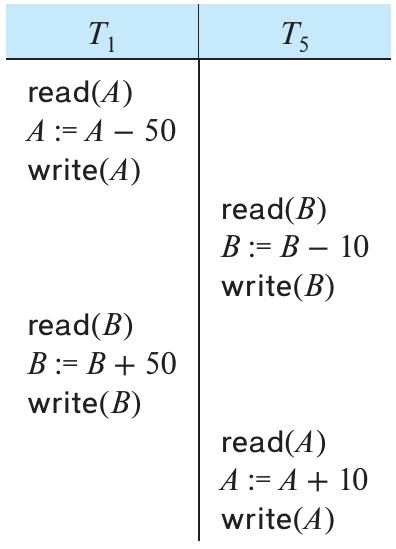
图17.13 调度 8。 时间从上向下推进，分列表示不同事务；read 为读取，write 为写入，commit 为提交，abort 为中止。
这个例子表明，还可以使用比冲突等价更宽松的调度等价定义。系统若想判断调度 8 与串行调度 ⟨T₁, T₅⟩ 产生相同结果，就必须分析 T₁、T₅ 的实际计算，不能只看读写。这样的分析一般难以实现，计算开销也大。本例中结果相同，是因为加、减常数的运算可以交换顺序。简单例子里这一点容易看出，但事务可能是一条复杂 SQL，也可能是包含 JDBC 调用的 Java 程序，一般情况就没有这么容易。
不过，也存在完全基于读写操作的其他等价定义，其中一种称为视图等价，由此得到视图可串行化性。由于判断的计算复杂度很高，实际中不采用视图可串行化性。4 相关讨论留到第 18 章。这里补充一点：调度 8 也不具有视图可串行化性。
17.7 事务隔离与原子性
此前研究调度时，隐含假定事务不会失败。现在讨论并发执行期间事务失败的影响。
无论 Tᵢ 因何失败，都需要撤销它的效果，以保证原子性。在允许并发的系统中，凡是依赖 Tᵢ 的事务 Tⱼ，即读过 Tᵢ 所写数据的事务，也必须中止。为此，需要限制系统允许产生的调度。
下面两节从事务故障恢复的角度说明哪些调度可以接受。第 18 章介绍如何保证系统只产生这样的调度。
17.7.1 可恢复调度
考虑图17.14 的部分调度 9。T₇ 只执行一条指令 read(A)。称它为部分调度，是因为尚未列出 T₆ 的提交或中止操作。T₇ 读完 A 就立即提交，此时 T₆ 仍处于活动状态。若随后 T₆ 在提交前失败，由于 T₇ 读过 T₆ 写入的 A，T₇ 依赖 T₆，必须跟着中止才能保证原子性。但 T₇ 已经提交，无法再中止，系统便无法从 T₆ 的失败中正确恢复。
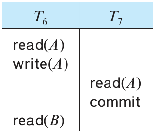
图17.14 调度 9：不可恢复调度。 时间从上向下推进，分列表示不同事务；read 为读取，write 为写入，commit 为提交，abort 为中止。
调度 9 是不可恢复调度。可恢复调度要求：对于每一对事务 Tᵢ、Tⱼ，只要 Tⱼ 读取了 Tᵢ 先前写入的数据项，Tᵢ 的提交就必须先于 Tⱼ 的提交。要使调度 9 可恢复，必须让 T₇ 等到 T₆ 提交后再提交。
17.7.2 无级联调度
即使调度可恢复，Tᵢ 失败后也可能需要回滚多个事务，因为其他事务可能已经读取了它写入的数据。例如图17.15：T₈ 写入的 A 被 T₉ 读取，T₉ 随后写入的 A 又被 T₁₀ 读取。若此时 T₈ 失败，T₈ 必须回滚；T₉ 依赖 T₈，也必须回滚；T₁₀ 依赖 T₉，同样必须回滚。一个事务失败引起一串事务回滚，称为级联回滚。
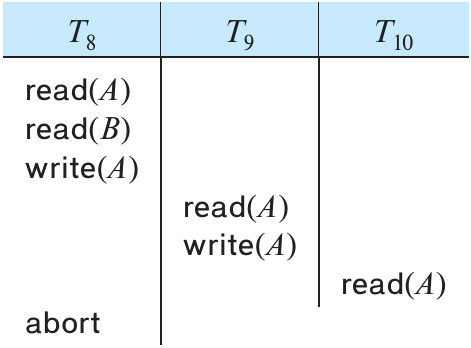
图17.15 调度 10。 时间从上向下推进，分列表示不同事务；read 为读取，write 为写入，commit 为提交，abort 为中止。
级联回滚会撤销大量已经完成的工作，应尽量避免。把调度限制为不会发生级联回滚的形式，就得到无级联调度。其正式定义是：对于每一对事务 Tᵢ、Tⱼ，只要 Tⱼ 读取了 Tᵢ 先前写入的数据项，Tᵢ 的提交必须先于 Tⱼ 的读操作。很容易验证，每个无级联调度也都是可恢复调度。
17.8 事务隔离级别
可串行化性让程序员在编写事务时，可以暂不考虑并发问题。只要每个事务单独执行时都保持数据库一致，可串行化就能保证并发执行仍然一致。不过，对某些应用，保证可串行化所需的协议会过度限制并发，此时可能采用较弱的一致性级别。这会增加程序员保证数据库正确性的负担。
SQL 标准也允许事务指定一种执行方式，使其相对于其他事务未必可串行化。例如，读未提交隔离级别允许读取尚未提交事务写入的数据。SQL 提供这些功能，是为了照顾结果无须十分精确的长事务；如果要求它们可串行化，可能干扰其他事务，延迟其他事务的执行。
SQL 标准定义了以下隔离级别：
- 可串行化（serializable）：通常保证可串行化执行。不过，某些数据库对这个级别的实现，在特定情况下仍可能允许不可串行化的执行，稍后会说明。
- 可重复读（repeatable read）：只允许读取已提交数据，并且一个事务两次读取同一数据项之间，不允许其他事务更新它。不过，事务仍未必相对于其他事务可串行化。例如，搜索满足某些条件的数据时，可能看见某个已提交事务插入的一部分数据，却看不见它插入的另一部分。
- 读已提交（read committed）：只允许读取已提交数据，但不要求可重复读。例如，两次读取同一数据项之间，另一事务可能已经更新并提交它。
- 读未提交（read uncommitted）：允许读取未提交数据，是 SQL 允许的最低隔离级别。
上述所有隔离级别还禁止脏写：如果某数据项已被另一个尚未提交、也尚未中止的事务写过，其他事务不能再写它。
许多数据库默认采用读已提交。SQL 允许显式设置隔离级别。例如：
set transaction isolation level serializable
将隔离级别设为可串行化，也可以指定其他级别。Oracle、PostgreSQL 和 SQL Server 支持上述语法。Oracle 还使用以下语法：
alter session set isolation_level = serializable
DB2 则使用 change isolation level，并为隔离级别定义了自己的缩写。更改隔离级别必须作为事务的第一条语句执行。
大多数数据库默认在每条语句执行后立即提交。要把多条语句作为同一事务执行，必须关闭单条语句的自动提交。start transaction 表示，之后直到 commit 或 rollback 的 SQL 都属于一个事务；commit 提交此前的语句，rollback 回滚它们。原书说明 SQL Server 使用 begin transaction 代替 start transaction，并将 Oracle、PostgreSQL 的 begin 也列为同义形式。
译注：原书关于 Oracle
begin的说明有误。Oracle 的事务由可执行 SQL 隐式开始，PL/SQL 的BEGIN用于开始程序块；不能将其直接视为 PostgreSQL 的事务开始命令。参见 Oracle 事务文档。
JDBC、ODBC 等 API 提供了关闭自动提交的函数。在 JDBC 中，5.1.1.8 节介绍的 Connection.setAutoCommit 可以通过 setAutoCommit(false) 关闭自动提交，通过 setAutoCommit(true) 开启。还可以调用 Connection 的 setTransactionIsolation(int level)，传入下列常量之一，设置相应隔离级别：
Connection.TRANSACTION_SERIALIZABLE
Connection.TRANSACTION_REPEATABLE_READ
Connection.TRANSACTION_READ_COMMITTED
Connection.TRANSACTION_READ_UNCOMMITTED
应用设计者可能为了性能接受较弱的隔离级别。17.9 节和第 18 章将看到，保证可串行化可能迫使事务等待，甚至因无法纳入可串行化执行而中止。为了性能冒一致性风险似乎欠妥，但只要能确认可能发生的不一致与应用无关，这种取舍就有道理。
隔离级别有多种实现。只要实现保证可串行化，应用设计者和使用者通常无须知道其细节，性能问题除外。但有些数据库即使设置为可串行化，实际上也采用较弱的隔离，无法排除所有不可串行化执行；17.9 节会再次讨论。无论显式还是隐式采用较弱隔离，设计者都需要了解部分实现细节，才能避免或减少由不可串行化引发的不一致。
17.9 隔离级别的实现
前面已经说明，调度必须满足哪些性质，才能保持数据库一致，并安全处理事务失败。
各种并发控制策略都可以保证：即使多个事务并发执行，且操作系统在事务之间任意分配 CPU 等资源，系统也只产生可接受的调度。
一个最简单的策略是，事务开始前锁住整个数据库，提交后释放锁。持锁期间其他事务无法获得锁，只能等待。这样每次只有一个事务运行，产生的都是串行调度，自然可串行化，也容易验证其可恢复且无级联。
这种策略性能较差，后一个事务必须等待前一个结束，完全没有并发。17.5 节已经说明，并发执行能带来明显的性能收益。
并发控制的目标，是在保持较高并发度的同时，保证所有可能产生的调度都具有冲突可串行化性或视图可串行化性，并且可恢复、无级联。
下面概述几种主要机制，第 18 章再展开细节。
17.9.1 加锁
事务可以只锁住它访问的数据项。持锁时间要足以保证可串行化，又要尽量短，以免过度影响性能。如果 SQL 访问哪些数据由 where 条件决定，情况还会更复杂，见 17.10 节。第 18 章介绍一种简单且广泛采用的两阶段锁协议：事务分两个阶段，第一阶段只获取锁、不释放锁；第二阶段只释放锁、不获取新锁。实际中，通常等事务执行完成、提交或中止后才释放锁。
注17.2 现实中的可串行化性
可串行化调度是保证一致性的理想方式，日常生活却未必提出如此严格的要求。购物网站可能显示某件商品有货，但用户选好商品、进入结账流程时，商品已经售罄。从数据库角度看，这就是不可重复读。
再看航空选座。假设旅客已经订好行程，正在为各段航班选座。许多网站允许用户依次选择各航班座位，最后确认。其他旅客可能同时为相同航班选座或改座，可用座位持续变化，但用户看到的只是开始选座时的一个快照。
两位旅客即使同时选座，也很可能选不同座位，此时没有实际冲突。不过，从调度角度看，这些事务仍不可串行化：每位旅客都读过随后被另一位更新的数据，优先图中形成环。如果确实选中同一个座位，其中一人无法获得所选座位，只需给他更新后的座位信息，请他重新选择，就可以解决。
让同一航班每次只允许一人选座，可以强制可串行化，但会造成明显延迟。其他旅客必须等待，有人迟迟不作决定时，影响尤其大。通常把这类过程分为需要用户交互的部分，以及完全在数据库中运行的部分。上例中的数据库事务只检查用户所选座位是否仍可用，若可用就更新记录。可串行化仅在这段不包含用户交互的数据库事务上保证。
使用共享锁与排他锁两种锁，可以进一步改善并发。读数据使用共享锁，写数据使用排他锁。多个事务可以同时持有同一数据项的共享锁；但要取得排他锁，必须没有其他事务持有该项的任何锁，无论共享还是排他。两种锁配合两阶段锁协议，允许并发读，同时保证可串行化。
17.9.2 时间戳
另一类隔离实现通常在事务开始时，为它分配一个时间戳。系统还为每个数据项维护两个时间戳：读时间戳是所有读过该项的事务时间戳中的最大值，即最近者；写时间戳是写入当前值的事务的时间戳。对于冲突访问，系统利用时间戳保证各事务按时间戳顺序访问每个数据项。如果无法维持这一顺序，就中止违背顺序的事务，再用新时间戳重新启动。
17.9.3 多版本与快照隔离
为数据项保留多个版本，就能让事务读取旧版本，避开尚未提交事务写入的新版本，或者避开在可串行化顺序中应排在后面的事务所写的版本。多版本并发控制有多种技术，其中快照隔离在实际中应用广泛。
在快照隔离中，可以想象每个事务开始时都得到自己的数据库版本，称为快照。5 事务从这个私有版本读数据，因而不受其他事务更新的影响。若它更新数据库，更新先只出现在自己的版本中；系统保存这些更新信息，待事务提交时再应用到“真实”数据库。
事务 T 进入部分提交状态后，只有当不存在其他并发事务修改过 T 想要更新的数据，才能继续提交。无法满足这一条件的事务会中止。
与加锁不同，快照隔离下读数据无须等待；只读事务不会因这种机制而中止，只有更新事务有少量中止风险。每个事务读自己的快照，所以读操作也不会阻塞其他事务随后发起的更新。多数事务是只读的，而多数更新事务也是读多写少，这通常是快照隔离比加锁性能更好的重要原因。
快照隔离的问题看似矛盾：它隔离得过于彻底了。在可串行化执行中，T 与 T′ 必有一个排在另一个之后，所以至少有一个能看到另一个的全部更新。快照隔离下，却可能两者都看不见对方的更新，可串行化执行中不会出现这种情况。大多数时候，两个事务的数据访问互不冲突，没有问题。但若 T 读取了 T′ 更新的项，而 T′ 又读取了 T 更新的项，双方都可能错过对方的更新。第 18 章将说明，这可能使数据库进入任何串行化执行都不会产生的不一致状态。
Oracle、PostgreSQL 和 SQL Server 都提供快照隔离选项。Oracle，以及 PostgreSQL 9.1 之前的版本，用快照隔离实现名为 serializable 的级别，因而在少数情况下允许不可串行化执行。SQL Server 在标准隔离级别之外另加 snapshot 级别，提供快照隔离。PostgreSQL 9.1 及后续版本则采用可串行化快照隔离，在保留快照隔离优点的同时保证可串行化。
译注：原文写“9.1 之后”，此处明确包含 9.1；该版本已经提供可串行化快照隔离，见 PostgreSQL 9.1 文档。
17.10 以 SQL 语句表达事务
4.3 节介绍了 SQL 中划定事务起止的语法。了解保证 ACID 时面临的问题后，现在可以讨论：事务由一系列 SQL 语句组成时，这些性质如何保证。前面的模型仅限简单读写。
简化模型假定数据项集合已经存在，只允许改变值，不能创建、删除数据项。SQL 的 insert 会创建数据，delete 会删除数据。两者都会修改数据库，所以也属于写操作，但它们与其他事务的交互有别于简单模型。例如，下面查询找出工资超过 90000 美元的全部教师，插入、删除会怎样与它冲突？
select ID, name
from instructor
where salary > 90000;
按 A.3 节的 instructor 示例，只有 Einstein 和 Brandt 满足条件。假设查询执行前后，另一个用户插入名为 James、工资为 100000 美元的新教师：
insert into instructor values ('11111', 'James', 'Marketing', 100000);
结果取决于插入发生在查询之前还是之后。直觉上，两者并发执行会冲突，但简单模型可能捕捉不到这种冲突。这称为幻读现象，因为冲突发生在“幻影”数据上。
简单模型的每个操作都把具体数据项作为参数，从读写步骤就能知道访问了哪些项。SQL 中，具体访问的元组却可能由 where 谓词决定。数据库值在两次执行之间改变，同一事务每次访问的数据项就可能不同。本例中，只有插入先于查询时，查询才会访问 James 元组。令 T 为查询、T′ 为插入。若 T′ 先执行，优先图中存在 T′ → T；但若 T 先执行，图中没有两者之间的边，尽管对幻影数据的实际冲突要求 T 在串行化顺序中先于 T′。
这说明并发控制不能只考虑事务实际访问的元组，还必须考虑用于查找这些元组的信息。插入、删除可能修改这些信息；使用索引时，更新搜索码属性也可能修改它们。例如，采用锁进行并发控制时，需要适当地锁住跟踪关系元组的数据结构，以及相关索引结构。不过，这样加锁有时会降低并发度。18.4.3 节介绍索引加锁协议，在存在插入、删除和查询谓词的情况下，尽量提高并发，同时保证可串行化。
再考虑查询：
select ID, name
from instructor
where salary > 90000;
以及以下更新：
update instructor
set salary = salary * 0.9
where name = 'Wu';
判断查询是否与更新冲突，会遇到一种特殊情况。如果查询扫描整个 instructor，就会读到 Wu 的元组，与更新发生冲突；若有索引直接定位工资大于 90000 的元组，查询就完全不会访问 Wu，因为示例中 Wu 的原工资为 90000，更新后为 81000，始终不满足查询条件。
这样一来，是否冲突竟取决于系统底层的查询处理选择，与用户看到的两条 SQL 的含义无关。另一种并发控制办法，是看插入、删除或更新是否可能改变谓词选中的元组集合；若可能，就认定它与该谓词冲突。本例谓词为 salary > 90000。把 Wu 的工资从 90000 调到更高，或把 Einstein 的工资从高于 90000 调到小于等于 90000，都会与该谓词冲突。按这一思想加锁，称为谓词锁，通常借助索引节点上的锁实现，见 18.4.3 节。
17.11 小结
- 事务是访问、也可能更新多个数据项的程序执行单元。理解事务，才能理解并实现可靠的数据库更新，使并发执行和各种故障都不会导致数据库不一致。
- 事务需要满足 ACID：原子性、一致性、隔离性、持久性。
原子性保证事务的效果全部反映到数据库中，或全部不反映；故障不能把数据库留在只执行了一部分事务的状态。
一致性保证数据库初始一致时，事务单独执行后仍然一致。
隔离性保证并发事务彼此隔离，每个事务都觉得没有其他事务与自己并发执行。
持久性保证事务提交后，其更新即使遇到系统故障也不会丢失。
- 并发执行提高事务吞吐量和系统利用率，也缩短事务等待时间。
- 存储分为易失性、非易失性和稳定存储。RAM 等易失性存储的数据会在计算机崩溃时丢失；磁盘等非易失性存储的数据不会因计算机崩溃而丢失，但可能因磁盘故障等偶发事件而丢失；理想稳定存储中的数据永不丢失。
- 需要在线访问的稳定存储，可用镜像磁盘或其他提供数据冗余的 RAID 形式逼近。离线、归档稳定存储可以是在物理安全地点保存的多份磁带副本。
- 多个事务并发执行时，数据一致性可能遭到破坏，系统必须控制它们之间的相互影响。
事务本身是保持一致性的单元，所以串行执行能保证一致性。
调度保留事务中影响并发执行的主要操作，例如读写，同时抽去事务内部执行细节。
一组事务并发处理所产生的任何调度，都应与这些事务按某个顺序串行执行的调度效果等价。
能保证这一点的系统，就保证了可串行化性。
不同的等价定义，对应冲突可串行化性、视图可串行化性等概念。
- 并发控制策略有多种，用于保证并发事务产生的调度可串行化。
- 给定调度，可以构造优先图，检查是否有环，以判断冲突可串行化性。不过，为保证运行时的可串行化，还有更高效的并发控制策略。
- 调度必须可恢复：若事务 a 看到了 b 的效果，而 b 随后中止，那么 a 也必须中止。
- 调度最好无级联，避免一个事务中止导致其他事务接连中止。只允许事务读取已提交数据，就能保证无级联。
- 数据库的并发控制管理组件负责落实策略，包括加锁、时间戳排序和快照隔离等技术。第 18 章进一步介绍。
- 数据库提供比可串行化更弱的隔离级别，减少对并发的限制，提高性能，同时引入某些应用可以接受的不一致风险。
- SQL 的
update、insert、delete涉及幻读现象，要保证正确并发执行，还需要额外处理。
复习术语
事务；ACID 性质（原子性、一致性、隔离性、持久性）；不一致状态；存储类型（易失性存储、非易失性存储、稳定存储）；并发控制系统；恢复系统。
事务状态（活动、部分提交、失败、已中止、已提交、已终止）；补偿事务；事务重新启动与终结。
可观察的外部写入；并发执行；串行执行；调度；操作冲突；冲突等价；冲突可串行化性；可串行化性测试；优先图；可串行化顺序；可恢复调度；级联回滚；无级联调度；隔离级别（可串行化、可重复读、读已提交、读未提交）。
脏写；自动提交；并发控制；加锁；时间戳排序；快照隔离；幻读现象；谓词锁。
练习题
17.1 假设有一个永不发生故障的数据库系统，它还需要恢复管理器吗？
17.2 考虑一个文件系统，例如你常用操作系统中的文件系统。
a. 创建、删除文件，以及向文件写入数据，分别需要哪些步骤？
b. 解释这些操作与原子性、持久性有什么关系。
17.3 数据库系统实现者对 ACID 的重视远超文件系统实现者，可能是什么原因？
17.4 哪一类或哪几类存储可以用来保证持久性？为什么？
17.5 每个冲突可串行化调度都具有视图可串行化性。为什么我们仍重点讨论冲突可串行化性？
17.6 考虑图17.16 的优先图。对应调度是否冲突可串行化？解释理由。
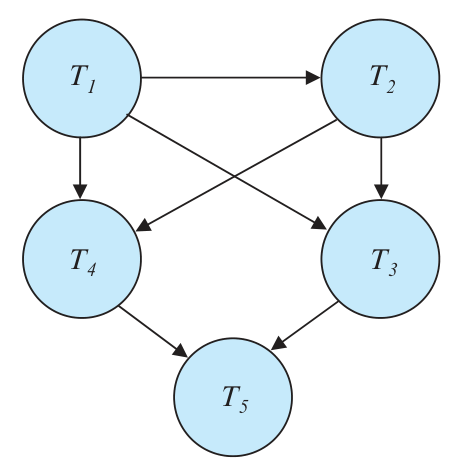
图17.16 练习题 17.6 的优先图。
17.7 什么是无级联调度？为什么希望调度无级联？是否存在允许非无级联调度更合适的情况？解释理由。
17.8 若事务 Tⱼ 先读一个数据项，另一个事务 Tₖ 随后写入该项，可能依据它此前读到的值；之后 Tⱼ 又写入该项，且忽略 Tₖ 写入的值，就会使 Tₖ 的更新丢失。这称为丢失更新异常。
a. 给出一个发生丢失更新的调度。
b. 给出调度，说明读已提交级别仍可能发生丢失更新。
c. 解释为什么可重复读级别不可能发生丢失更新。
17.9 某银行数据库采用快照隔离。描述一种具体情形，其中不可串行化执行会给银行带来问题。
17.10 某航空公司数据库采用快照隔离。描述一种具体情形，其中虽然出现不可串行化执行，航空公司仍愿意为了整体性能而接受它。
17.11 调度的定义假定操作可以按时间形成全序。对于多处理器系统，不同处理器上的操作未必能确定精确先后，但同一数据项上的操作仍能形成全序。这会给冲突可串行化性的定义带来问题吗？解释理由。
习题
17.12 列出 ACID 四种性质，说明每一种的作用。
17.13 事务执行时经过若干状态，最终提交或中止。列出所有可能的状态序列，解释每种状态转换为何发生。
17.14 解释串行调度与可串行化调度的区别。
17.15 考虑两个事务：
T13: read(A);
read(B);
if A = 0 then B := B + 1;
write(B).
T14: read(B);
read(A);
if B = 0 then A := A + 1;
write(A).
一致性要求为 A = 0 ∨ B = 0，初值为 A = B = 0。
a. 证明这两个事务的任何串行执行都保持数据库一致。
b. 给出 T₁₃、T₁₄ 的一种并发执行，使调度不可串行化。
c. 是否存在产生可串行化调度的并发执行？
17.16 给出包含两个事务的可串行化调度，使它们的提交顺序与串行化顺序不同。
17.17 什么是可恢复调度？为什么希望调度可恢复？是否存在允许不可恢复调度更合适的情况？解释理由。
17.18 保证并发执行不出问题需要额外工作，数据库为什么仍支持并发事务？
17.19 解释为什么读已提交隔离级别能保证调度无级联。
17.20 对以下每个隔离级别，分别给出一个满足该级别、却不可串行化的调度：
a. 读未提交。
b. 读已提交。
c. 可重复读。
17.21 除 read、write 外，再允许操作 pred_read(r, P)，读取关系 r 中所有满足谓词 P 的元组。
a. 给出一个使用 pred_read 的调度，展示幻读现象，并由此导致不可串行化。
b. 给出一个调度，其中一个事务对关系 r 使用 pred_read，另一个并发事务从 r 删除一个元组，但不发生幻读冲突。需要给出 r 的模式，并展示被删元组的各属性值。
延伸阅读
[Gray and Reuter (1993)] 以教材形式详细介绍事务处理的概念、技术和实现，包括并发控制与恢复。[Bernstein and Newcomer (2009)] 也系统介绍了事务处理的各个方面。
[Eswaran et al. (1976)] 在 System R 并发控制研究中，将可串行化概念形式化。
并发控制、恢复等具体主题的参考文献，分别列在第 18 章和第 19 章。
参考文献
- [Bernstein and Newcomer (2009)] P. A. Bernstein and E. Newcomer, Principles of Transaction Processing, 2nd edition, Morgan Kaufmann (2009).（《事务处理原理》第 2 版）
- [Eswaran et al. (1976)] K. P. Eswaran, J. N. Gray, R. A. Lorie, and I. L. Traiger, “The Notions of Consistency and Predicate Locks in a Database System”, Communications of the ACM, Volume 19, Number 11 (1976), pages 624–633.（《数据库系统中的一致性与谓词锁概念》）
- [Gray and Reuter (1993)] J. Gray and A. Reuter, Transaction Processing: Concepts and Techniques, Morgan Kaufmann (1993).（《事务处理：概念与技术》）
图片来源
本章开头的帆船照片：© Pavel Nesvadba/Shutterstock。